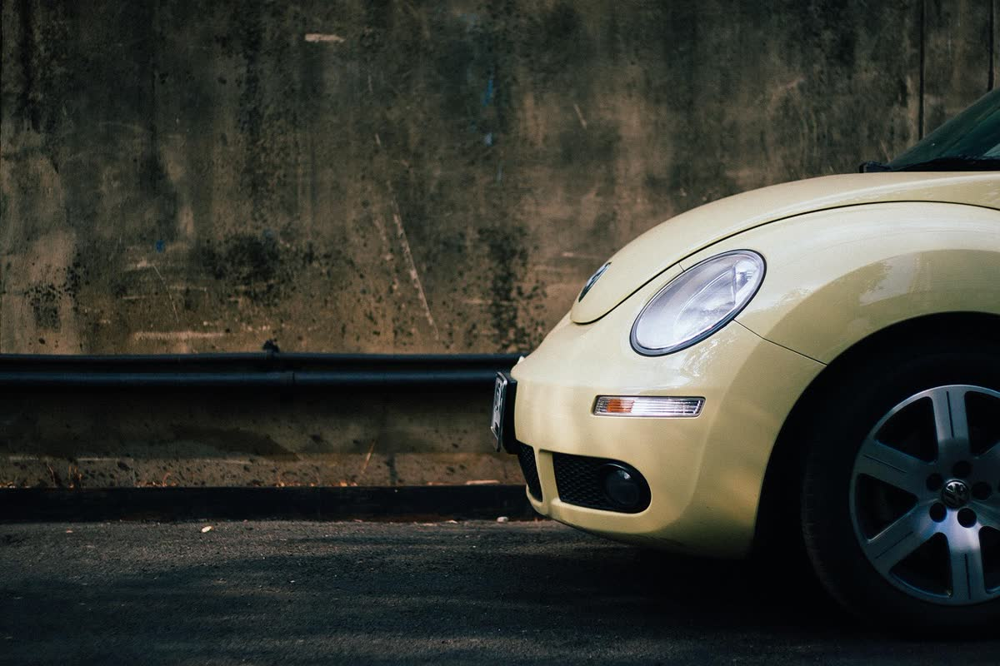
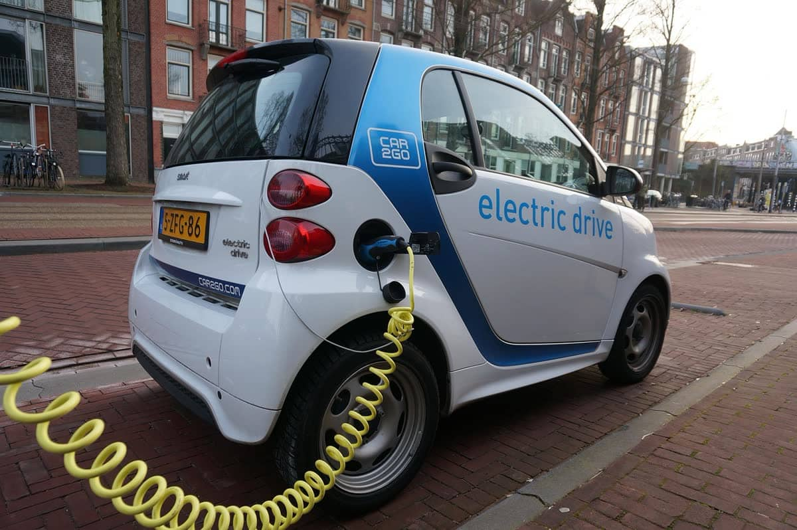
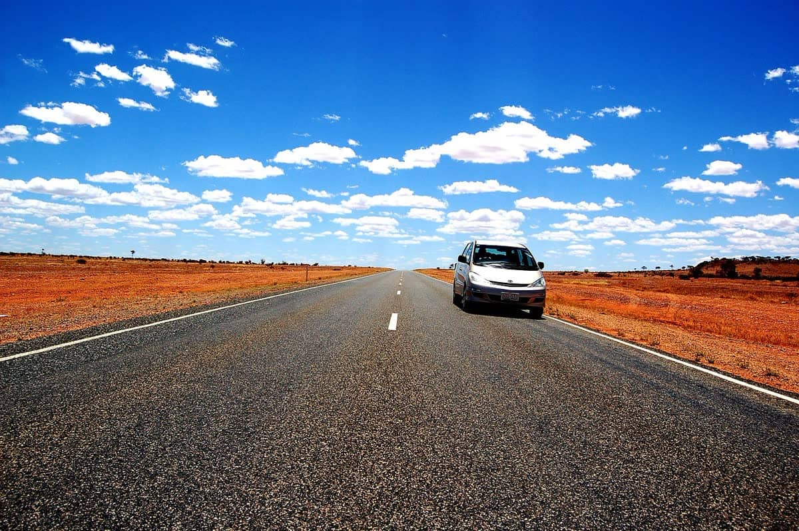
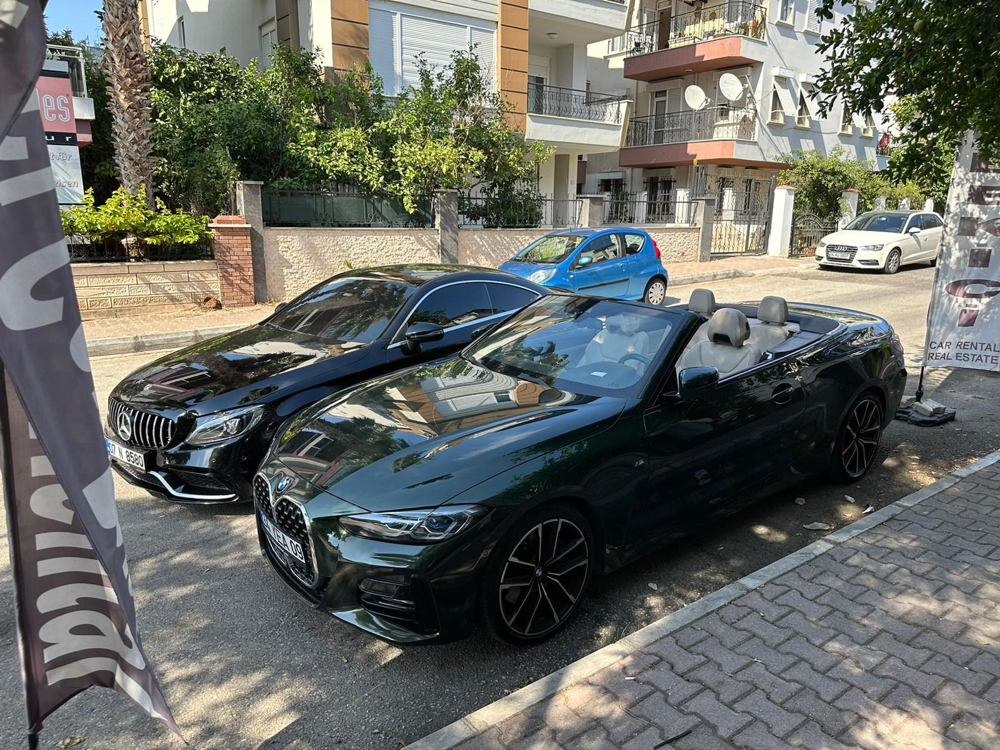
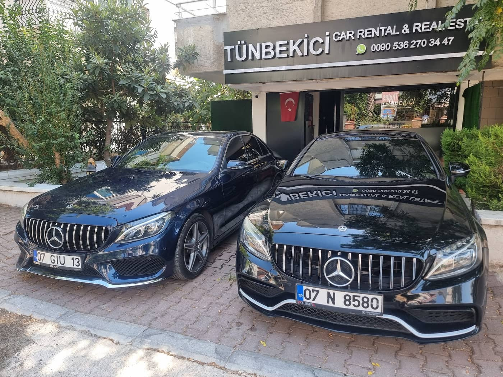
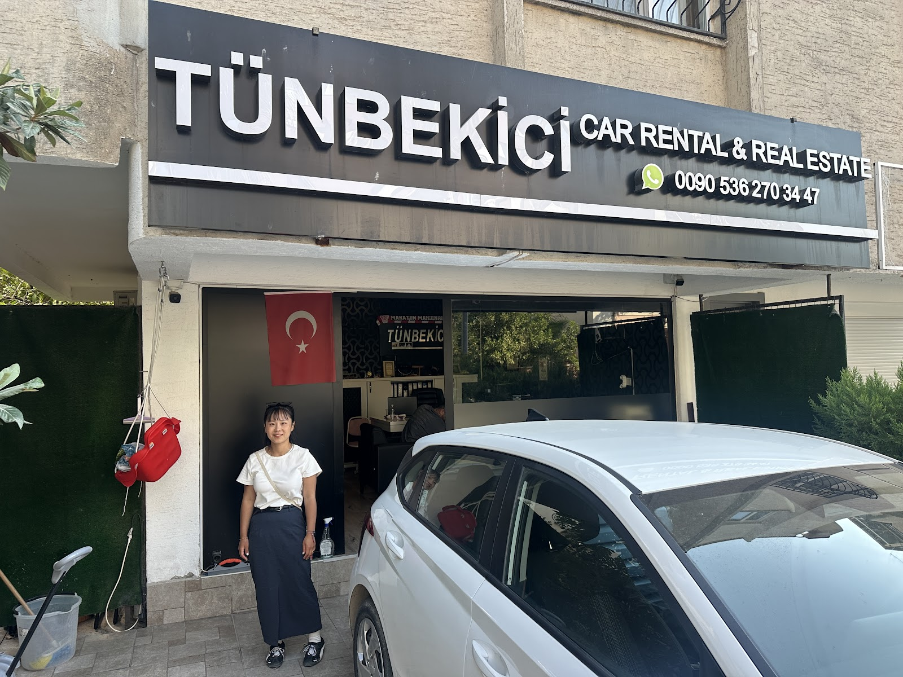
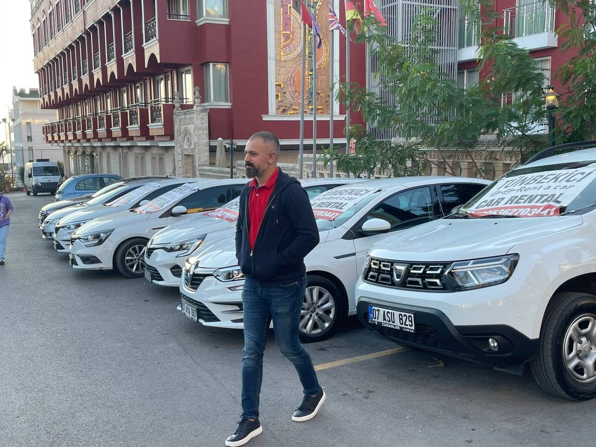

Havalimanı karşılamasından araç tesliminize kadar her adımda yanınızdayız. Yeni model araçlar, açık iletişim ve ilgili bir ekiple Antalya'yı rahatça gezin.



Uçuş numaranızı yazın, rötar olursa ücretsiz bekleriz. Tüm ekstralar ve toplam fiyat, size yazmadan önce ekranda.
Araca dokunup mevcut çizikleri işaretleyin. Saatli tutanak iki tarafı da korur; dönüşte "bu çizik vardı" tartışması olmaz.




Müşterilerimiz bizi güvenilir, samimi ve dürüst bir firma olarak anlatıyor. Kiralama sürecini açık ve net yürütüyoruz.
Rahmi Bey ve ekibi, ilk görüşmeden araç teslimine kadar sürecin her adımında yardımcı olur.
İstediğiniz sınıfta araç bulmanız için bütçenize uygun seçenekleri birlikte değerlendiriyoruz.
Araçlarımız yeni model, temiz ve teslime hazır olarak sizi bekler.
📍 h.cetin, Şirinyalı, 1508. Sk. apt b block no 4/b, 07030 Muratpaşa/Antalya
🕑 Pzt–Paz 24 saat